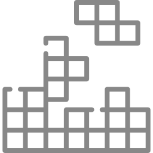
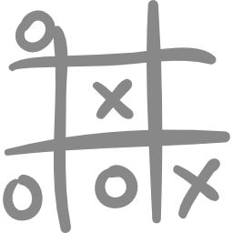

KRÓTKA HISTORIA GIER...
CO BYŁO PIERWSZE ?
PIERWSZE GRY Z GRAFIKĄ
PIERWSZA GENERACJA
PIERWSZE GRY NA KOMPUTERY
GRY TRÓJWYMIAROWE
WSPÓŁCZESNOŚĆ


Gry komputerowe to najpopularniejsza forma rozrywki na świecie. W gry gra 711 milionów ludzi w tym 13,4 miliona Polaków. Gracze są bardzo zróżnicowani pod względem wieku jedni mają 5 a inni 75 lat, a średnia wieku graczy to 35 lat. Więc myślę, że warto zagłębić się w ich historię.
Zapewne wielu z nas zastanawiało się jaka gra była pierwsza, wielu powiedziało by, że Tetris, inni, że Pong. Jednak to nie byłaby prawda. Pierwszą grą video była gra Cathode-Ray Tube Amusement Device, lecz z tego powodu, że nie posiadała żadnych elementów programowych nie można ją nazwać pierwszą grą komputerową.
W 1952 roku powstała pierwsza gra komputerowa Noughts and Crosses, czyli Kółki i Krzyżyk. Następnie w 1958 roku powstała gra Tennis for Two na podstawie gry w tenisa. Nieco później ,bo w 1962 roku powstała każdemu znana gra Spacewar.
Pierwsza Generacja, która występowała w latach 1972-1979, to czas automatów do gier. Pierwszą grą na automaty był Pong, który stał się komercyjnym przebojem. Kolejnymi grami na automaty był: Brekout, Pac-Man, Mario Bros,
Przełomowym momentem w branży tworzenia gier było stworzenie, w 1981 roku, komputera osobistego IBM PC. Dzięki temu mogły narodzić się gry na komputer, a także gry trójwymiarowe i wieloosobowe.
Grafika trójwymiarowe po raz pierwszy pojawiła się w grze komputerowej BattleZone. Następnie następnie pojawienie się przemołowego dla rozwoju branży first-person shootera Quake. Dzięki upowszechnieniu się internetu pod koniec lat 90 ukształtował się gatunek MMORPG, umożliwiający grę wieloosobową.
Na przełomie XX i XXI wieku zaczął się kształtować biznes gier komputerowych, a także powstały nowe platformy do gier takie jak Steam czy Xbox Live i PlayStation Network. Bardzo duże sukcesy odnoszą gry na urządzenia mobilne, których znakiem rozpoznawczym jest fińska produkcja Angry Birds.